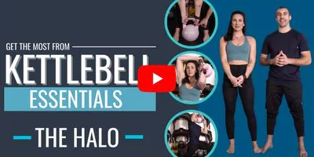

B751 · Kettlebell Halo: Use These Progressions
Hello {first_name},
Exercise progressions are there to help methodically and intentionally make your body “smarter.”
A smarter body moves with greater ease and control, AND continues to progress in complexity.
For example, it’s cool to do a standing broad jump. But if you have the capability to do a standing broad jump and stick the landing on a narrow balance beam, to me that demonstrates a body that has leveled up in "smartness."
In today’s video, we go over the halo. It’s a fundamental movement focusing on the shoulders. Add in the 2 progressions covered in this video and you'll experience training your body to be “smarter” with control, mobility, and coordination.
Click here and add these progressions in with the halo to get more benefit out of the same amount of time invested into your workout.
 Train intentionally, Mike Salemi
|